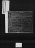
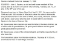
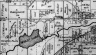

Squier, John L
| Birth Name | Squier, John L |
| Gender | male |
| Age at Death | 97 years, 9 months, 3 days |
Events
| Event | Date | Place | Description | Sources |
|---|---|---|---|---|
| Residence | about 1855 | Montello River, Harrisville, Marquette, Wisconsin, USA | Bought a saw mill which he disposed of in spring of 1855 | 1a |
|
|
||||
| Birth | 4/9/1811 | Salem, Washington, New York, USA | 2a | |
|
Note
Obituary lists birth place as Salem, New York. Emerson Porter Squier death certificate says Rochester (but mother's birth place might also be wrong on there). Book: History of Rice County lists birth place as Washington County, New York (which encloses Salem). |
||||
| Residence | 1828 | Monroe, New York, USA | Moved with parents when he was seventeen | 1a |
|
|
||||
| Marriage | 1832 | Roxanna Howard (had 8 children together) | 1a | |
|
|
||||
| Residence | 1837 | Crawford, Pennsylvania, USA | Bought a farm, lived on it for 2 years then returned to New York | 1a |
|
|
||||
| Residence | 1844 | Marquette, Wisconsin, USA | Purchased a farm on which he resided 11 years | 1a |
|
|
||||
| Residence | 1855 | Wells, Rice, Minnesota, USA | Located in section thirty-four. Built a frame house but in 1872 built present frame house. | |
|
Note
Bought a farm in the town of Wells, where he resided until 1 yr prior to his death. |
||||
| Occupation | 1880 | Wells, Rice, Minnesota, USA | Farmer | |
|
|
||||
| Burial | 1909 | Oak Ridge Cemetery, Faribault, Rice, Minnesota, USA | 2a | |
|
|
||||
| Death | 1/12/1909 | Cannon City, Rice, Minnesota, USA | 2a | |
|
|
||||
Parents
| Relation to main person | Name | Birth date | Death date | Relation within this family (if not by birth) |
|---|---|---|---|---|
| Father | Squier, Daniel II | 6/8/1784 | 3/4/1829 | |
| Mother | Lytle, Sarah Ann | 1782 | 1847 | |
| Squier, John L | 4/9/1811 | 1/12/1909 |
Families
Family of Squier, John L and Scoville, Abigail J |
||||||||
| Married | Wife | Scoville, Abigail J ( * about 1834 + 3/6/1900 ) | ||||||
| Children | ||||||||
| Name | Birth Date | Death Date |
|---|---|---|
| Squier, Emerson Porter | 12/11/1854 | 1/28/1935 |
Media



×
Pedigree
Ancestors
Source References
-
Online Users: Find a Grave Webpages
-
- Page: John L Squier; https://www.findagrave.com/memorial/132426767/john-lytle-squier
-
-
Faribault Democrat (Faribault, Minnesota)
-
- Date: 1/15/1909
- Page: John L Squier Obituary
-
Citation:
Image of typed obituary shared as a story on Ancestry.com
Date submitted 1/19/2009
Submitted by ace4920
-